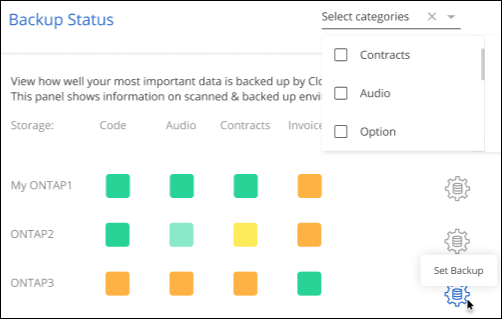

Request doc changes
Request doc changes Edit this page
Edit this page Learn how to contribute
Learn how to contributeManaging cyber security recommendations for your data sources
Contributors
Use the Cloud Manager Ransomware Protection Dashboard to view an overview of the cyber resilience of all your working environments and data sources. You can drill down in each area to find more details and possible remediations.

Cyber Resilience Map
The Cyber Resilience Map is the main area in the dashboard. It enables you to see all your working environments and data sources in a visual manner and be able to view relevant cyber-resilience information.

The map consists of three parts:
- Left panel
-
Shows a list of alerts for which the service is monitoring across all of your data sources. It also indicates the number of each particular alert that is active in your environment. Having a large number of one type of alert may be a good reason to try to resolve those alerts first.
- Center panel
-
Shows all of your data sources, services, and Active Directory in a graphical format. Healthy environments have a green indicator and environments that have alerts have a red indicator.
- Right panel
-
After you click on a data source that has a red indicator, this panel shows the alerts for that data source and provides recommendations to resolve the alert. Alerts are sorted so that the most recent alerts are listed first. Many recommendations lead you to another Cloud Manager service where you can resolve the issue.
These are the currently tracked alerts and suggested remediations.
| Alert | Description | Remediation |
|---|---|---|
High data encryption rates detected |
An abnormal increase in the percentage of encrypted files, or corrupted files, in the data source has occurred. This means that there was a greater than 20% increase in the percentage of encrypted files in the past 7 days. For example, if 50% of your files are encrypted, then a day later this number increases to 60%, you would see this alert. |
Click the link to launch the Data Sense Investigation page. There you can select the filters for the specific Working Environment and Category (Encrypted and Corrupted) to view the list of all encrypted and corrupted files. |
Sensitive data with wide permissions found |
Sensitive data is found in files and the access permissions level is too high in a data source. |
Click the link to launch the Data Sense Investigation page. There you can select the filters for the specific Working Environment, Sensitivity Level (Sensitive Personal), and Open Permissions to view the list of the files that have this issue. |
One or more volumes are not backed up using Cloud Backup |
Some volumes in the working environment aren’t being protected using Cloud Backup. |
Click the link to launch Cloud Backup and then you can identify the volumes that aren’t being backed up in the working environment, and then decide if you want to enable backups on those volumes. |
One or more repositories (volumes, buckets, etc.) in your data sources are not being scanned by Data Sense |
Some data in your data sources isn’t being scanned using Cloud Data Sense to identify compliance and privacy concerns and find optimization opportunities. |
Click the link to launch Data Sense and enable scanning and mapping for the items that are not being scanned. |
On-box anti-ransomware is not active for all volumes |
Some volumes in the on-prem ONTAP system don’t have the NetApp anti-ransomware feature enabled. |
Click the link and you are redirected to the Harden your ONTAP environment panel and to the working environment with the issue. There you can investigate how best to fix the issue. |
ONTAP version is not updated |
The version of ONTAP software installed on your clusters are not in accordance with the recommendations from the NetApp Security Hardening Guide for ONTAP Systems. |
Click the link and you are redirected to the Harden your ONTAP environment panel and to the working environment with the issue. There you can investigate how best to fix the issue. |
Snapshots not configured for all volumes |
Some volumes in the working environment aren’t being protected by creating volume snapshots. |
Click the link and you are redirected to the Harden your ONTAP environment panel and to the working environment with the issue. There you can investigate how best to fix the issue. |
File operations auditing is not turned on for all SVMs |
Some storage VMs in the working environment don’t have file system auditing enabled. It is recommended so you can keep track of users actions on your files. |
Click the link and you are redirected to the Harden your ONTAP environment panel and to the working environment with the issue. There you can investigate whether you need to enable NAS auditing on your SVMs. |
Top data repositories by data sensitivity
The Top Data Repositories by Sensitivity Level panel lists up to the top four data repositories (working environments and data sources) that contain the most sensitive items. The bar chart for each working environment is divided into:
-
Non-Sensitive data
-
Personal data
-
Sensitive Personal data

You can hover over each section to see the total number of items in each category.
Click each area to view the filtered results in the Data Sense Investigation page so that you can investigate further.
Domain Administrator Group control
The Domain Administrator Group control panel shows the most recent users who have been added into your domain administrator groups so that you can see if all the users should be allowed in those groups. You must have integrated a global Active Directory into Cloud Data Sense for this panel to be active.

The default administrative admin groups include “Administrators”, “Domain Admins”, “Enterprise Admins”, “Enterprise Key Admins”, and “Key Admins”.
Data listed by types of open permissions
The Open Permissions panel shows the percentage for each type of permission that exist for all files that are being scanned. The chart is provided from Data Sense and it shows the following types of permissions:
-
No Open Access
-
Open to Organization
-
Open to Public
-
Unknown Access

You can hover over each section to see the percentage and total number of files in each category.
Click each area to view the filtered results in the Data Sense Investigation page so that you can investigate further.
Data listed by encrypted files
The Encrypted Files panel shows the top 4 data sources with the highest percentage of files that are encrypted, over time. These are typically items that have been password protected. It does this by comparing the encryption rates over the past 7 days to see which data sources have a greater than 20% increase. An increase of this amount could mean that ransomware is already attacked your system.

Click a line for one of the data sources to view the filtered results in the Data Sense Investigation page so that you can investigate further.
Status of ONTAP systems hardening
The Harden your ONTAP environment panel provides the status of certain settings in your ONTAP systems that track how secure your deployment is according to the NetApp Security Hardening Guide for ONTAP Systems and to the ONTAP anti-ransomware feature that proactively detects and warns about abnormal activity.
You can review the recommendations and then decide how you want to address the potential issues. You can follow the steps to change the settings on your clusters, defer the changes to another time, or ignore the suggestion.
This panel supports on-prem ONTAP, Cloud Volumes ONTAP, and Amazon FSx for NetApp ONTAP systems at this time.

The settings that are being tracked include:
| Hardening Objective | Description | Remediation |
|---|---|---|
ONTAP Anti-ransomware |
The percentage of volumes that have on-box anti-ransomware activated. Valid for on-prem ONTAP systems only. |
See how to enable anti-ransomware on your volumes using System Manager. |
NAS Auditing |
The number of storage VMs that have file system auditing enabled. |
See how to enable NAS auditing on SVMs using the CLI. |
ONTAP Version |
The version of ONTAP software installed on your clusters. |
See the best way to upgrade your on-prem clusters or your Cloud Volumes ONTAP systems. |
Snapshots |
Is the snapshot capability activated on data volumes, and what percentage of volumes have Snapshot copies. |
See how to enable volume snapshots on your on-prem clusters, or on your Cloud Volumes ONTAP systems, or on your FSx for ONTAP systems. |
Status of permissions on your critical business data
The Business critical data permissions analysis panel shows the permissions status of data that is critical for your business. That way you can quickly assess how well you are protecting your business critical data.

Initially this panel shows data based on default policies that we have selected. But you can select the 2 most important Data Sense Policies that you have created to view your most critical business data. See how to create your policies using Data Sense.
The graph shows permission analysis of all the data that meets the criteria from your policies. It lists the number of items that are:
-
Open to public permissions – the items which Data Sense considers as open to public
-
Open to organization permissions – the items which Data Sense considers as open to organization
-
No open permissions – the items which Data Sense considers as no open permissions
-
Unknown permissions – the items which Data Sense considers as unknown permissions
Hover over each bar in the charts to view the number of results in each category. Click a bar and the Data Sense Investigation page is displayed so you can investigate further about which items have open permissions and whether you should make any adjustments to file permissions.
Backup status of your critical business data
The Backup Status panel shows how different categories of data are being protected using Cloud Backup. This identifies how comprehensively your most important categories of data are backed up in case you need to recover because of a ransomware attack. This data is a visual representation of how many items of a specific category in a working environment are backed up.
Only on-prem ONTAP and Cloud Volumes ONTAP working environments that are already being backed up using Cloud Backup and scanned using Cloud Data Sense will appear in this panel.

Initially this panel shows data based on default categories that we have selected. But you can select the categories of data that you want to track; for example, codes files, contracts, etc. See the full list of categories that are available from Cloud Data Sense for your working environments. Then select up to 4 categories.
After the data is populated, hover over each square in the charts to view the number of files that are backed up out of all files in the same category in the working environment. A green square means 85% or greater of your files are being backed up. A yellow square means between 40% and 85% of your files are being backed up. And a red square means 40% or fewer files are being backed up.
You can click the Cloud Backup button at the end of the row to go to the Cloud Backup interface to enable backup on more volumes in each working environment.